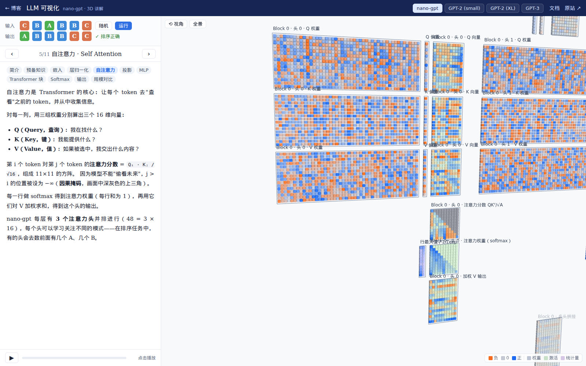
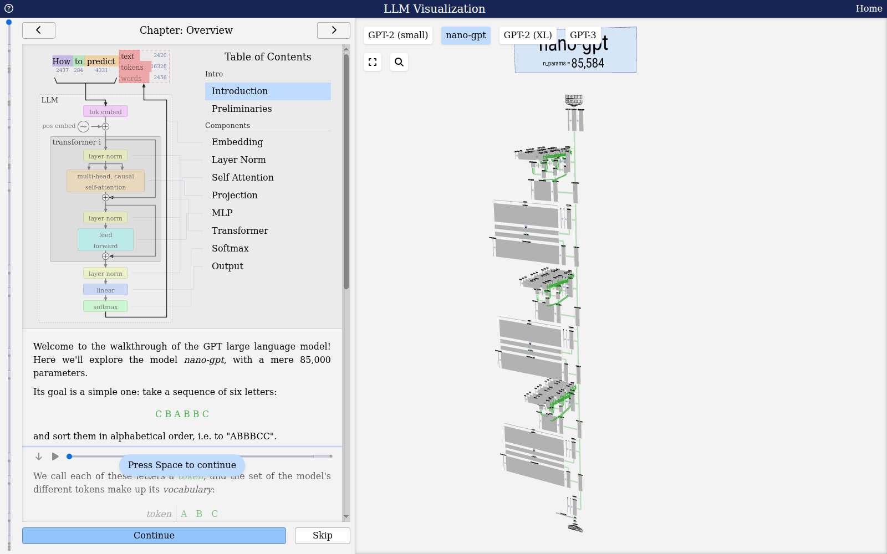
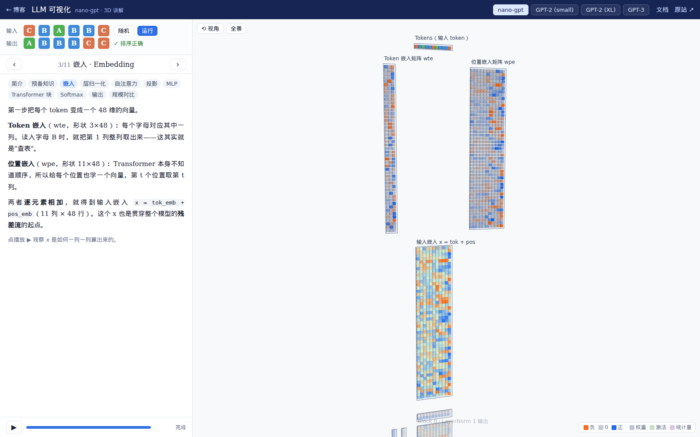
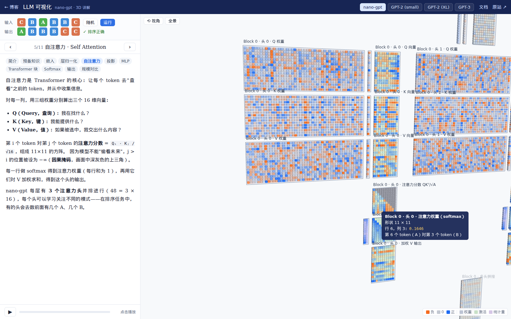
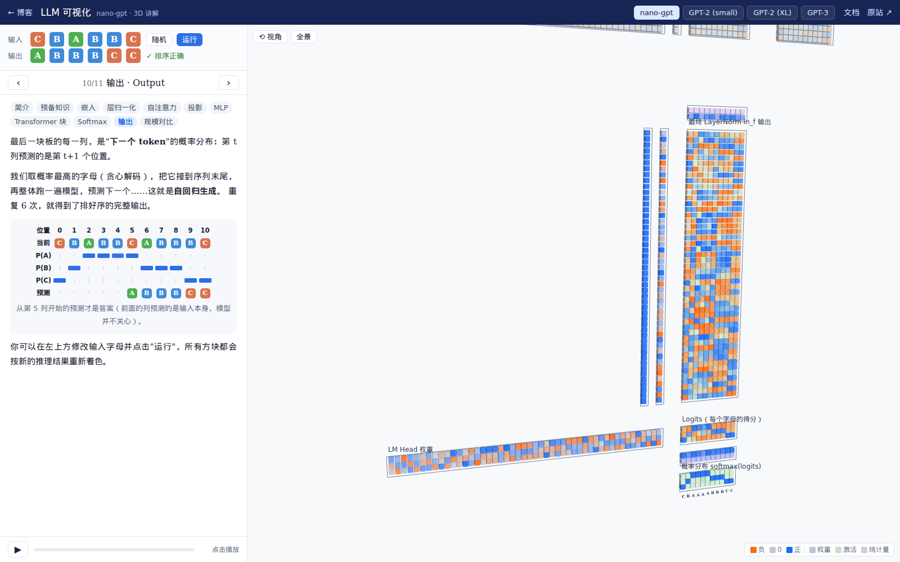
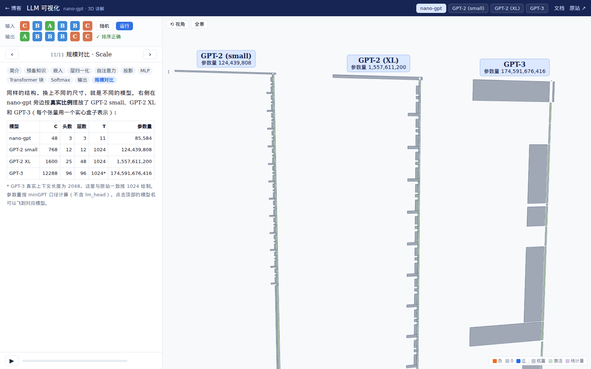
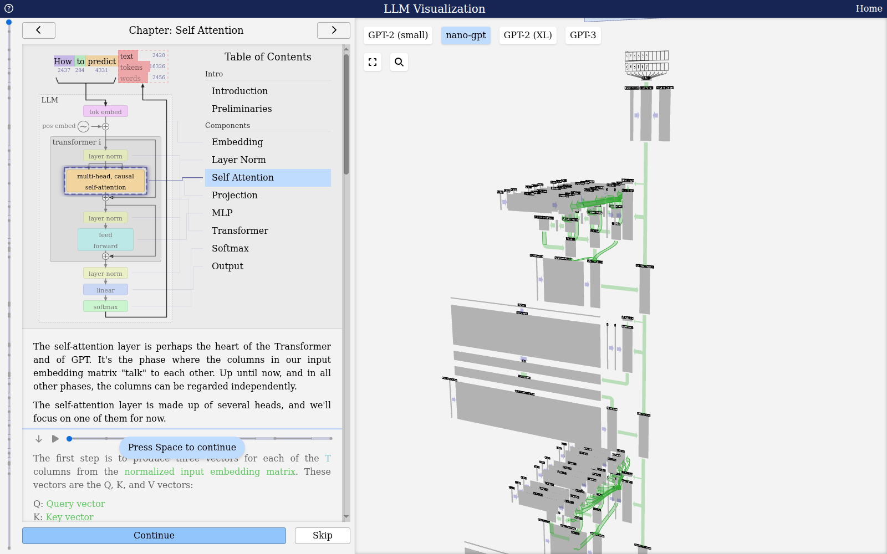
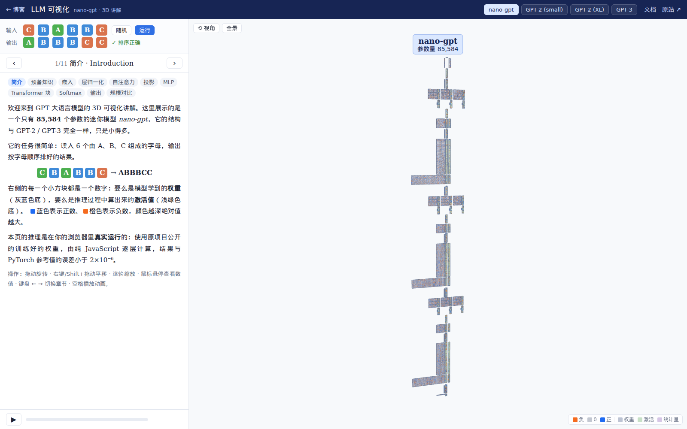

用 REA + Craft Anything 逆向并复刻 LLM 3D 可视化（bbycroft.net/llm）
在线体验 👉 /llm-viz/ ｜ 原站：https://bbycroft.net/llm
Brendan Bycroft 的 LLM Visualization 是我见过讲 GPT 内部结构最直观的作品：它把一个真实的小型 GPT 的每一个权重、每一个中间结果都画成 3D 空间里的小方块，配合逐章讲解，一步一步展示一次推理是怎么完成的。
这篇文章完整记录了我做的一件事：用两个开源逆向工具 REA 和 Craft Anything 对这个网站做逆向分析（RE），然后根据分析结果，用纯 JavaScript + WebGL2 从零写一个复刻版，部署到本博客。
复刻版的特点：
- 真实推理：浏览器里用纯 JS 跑 nano-gpt（3 层、3 头、48 维）的完整前向计算，与 PyTorch 参考激活值逐层比对，最大误差 1.9×10⁻⁶。
- 近 12 万个格子：nano-gpt 的每一个权重和激活值（共 192 个张量、119,509 个数）都是一个 3D 方块，颜色表示数值正负和大小，鼠标悬停可以看到具体数字。
- 11 章中文讲解：简介 → 预备知识 → 嵌入 → 层归一化 → 自注意力 → 投影 → MLP → Transformer 块 → Softmax → 输出 → 规模对比，每章自动飞到对应位置，并能播放"逐列计算"的动画。
- 可交互：可以修改输入字母重新推理；可以飞到按真实比例绘制的 GPT-2 small / XL、GPT-3 旁边做规模对比。
- 零依赖、零构建：一个
index.html+ 5 个 ES 模块，直接作为 Hugo 静态文件发布。

目录
- 两个工具是什么
- 准备环境（没有 sudo 也能跑）
- 用 REA 分析线上页面
- 用 Craft Anything 还原源码
- 逆向得到的关键事实
- 复刻：架构设计
- 复刻：推理引擎与数值校验
- 复刻：3D 布局与渲染
- 复刻：讲解系统与交互
- 效果对比与差异
- 如何在本地运行、修改与部署
- 踩坑记录
- 版权与致谢
1. 两个工具是什么
REA（Reverse Engineer Anything）
- 仓库：https://github.com/morluto/rea，npm 包
rea-agents，本文使用 v6.9.0。 - 定位：一个 MCP 服务器 + 命令行工具，给 AI Agent（Claude Code、Codex、Cursor 等）提供逆向工程能力，覆盖原生二进制、JavaScript/Electron、.NET、Android、网站等。
- 特点：每个结论都以 Evidence（证据记录） 的形式返回，包含置信度（
observed/derived）、覆盖范围和局限性说明。分析网站时，它通过 Chrome DevTools Protocol（CDP） 连接一个本地浏览器，被动地抓取页面加载的脚本并做静态分析，不会执行抓到的 JS。
Craft Anything
- 仓库：https://github.com/storytold/craft-anything，本文使用 v0.6.1 Linux 发行包。
- 定位：一个纯 Rust 写的逆向 + 复刻引擎（有桌面应用、CLI 和 MCP 三种形态，共 320 个工具）。它的完整流程是"研究原版 → 让编码 Agent 构建新项目 → 与原版对比检查 → 迭代"。
- 两种模式，这一点很重要：
- Clean room（净室，默认）：只研究访客能看到的东西（截图、DOM、网络请求），绝不读取原版的代码。适合原版代码版权不明确的场景。
- Deep（深度）：允许读取、反混淆原版代码。
两个工具的分工：REA 负责"在线观察 + 取证"（连上浏览器看页面加载了什么、调用了什么接口、用了什么框架），Craft Anything 负责"离线深挖"（把压缩后的打包代码还原成可读源码、构建应用依赖图）。
2. 准备环境（没有 sudo 也能跑）
我的环境是 WSL2 下的 Ubuntu 24.04，有 Node.js 22，但没有 sudo、没有 Rust、没有浏览器。以下是全部准备步骤，所有东西都装在临时目录里，不污染系统。
2.1 安装 REA
mkdir -p /tmp/rea-dl/rea && cd /tmp/rea-dl/rea
npm init -y && npm install rea-agents
npx rea --help # 列出全部命令
2.2 安装 Craft Anything（用官方预编译包，免装 Rust）
源码构建需要 Rust 1.97+，这里直接下载 Release 里的 Linux 包，并用 SHA256SUMS.txt 校验完整性：
v=0.6.1
curl -fLO "https://github.com/storytold/craft-anything/releases/download/v$v/craft-anything-$v-linux-x86_64.tar.gz"
curl -fLO "https://github.com/storytold/craft-anything/releases/download/v$v/SHA256SUMS.txt"
grep "linux-x86_64.tar.gz$" SHA256SUMS.txt | sha256sum -c - # 输出 OK
tar xzf craft-anything-$v-linux-x86_64.tar.gz
CA=$PWD/craft-anything-$v-linux-x86_64/bin/craft-anything-cli
$CA --version # craft-anything-cli 0.6.1
$CA doctor # 检查可用的引擎（Ghidra、Chromium、Frida 等，均为可选）
2.3 准备一个可被 CDP 连接的无头浏览器
两个工具分析网站都需要 Chromium。用 Playwright 下载（不需要 root）：
npx playwright install chromium
直接运行会报缺系统库（libnspr4.so、libnss3.so、libasound.so.2）。没有 sudo 装不了，但可以只下载 deb 包、解压到本地目录，再用 LD_LIBRARY_PATH 指过去：
mkdir -p /tmp/rea-dl/libs && cd /tmp/rea-dl/libs
apt-get download libnspr4 libnss3 libasound2t64
for d in *.deb; do dpkg-deb -x $d root; done
export LD_LIBRARY_PATH=/tmp/rea-dl/libs/root/usr/lib/x86_64-linux-gnu
页面里的中文需要字体，同样的办法弄一个文泉驿微米黑，配一个只在本进程生效的 fontconfig：
apt-get download fonts-wqy-microhei && dpkg-deb -x fonts-wqy-microhei_*.deb fontroot
cat > /tmp/rea-dl/fontconf/fonts.conf <<'EOF'
<?xml version="1.0"?><!DOCTYPE fontconfig SYSTEM "fonts.dtd">
<fontconfig>
<include ignore_missing="yes">/etc/fonts/fonts.conf</include>
<dir>/tmp/rea-dl/libs/fontroot/usr/share/fonts</dir>
<cachedir>/tmp/rea-dl/fontconf/cache</cachedir>
</fontconfig>
EOF
export FONTCONFIG_FILE=/tmp/rea-dl/fontconf/fonts.conf
最后启动无头浏览器，开启远程调试端口。原站是 WebGL 应用，没有 GPU 时用 SwiftShader 软件渲染：
chrome-headless-shell --remote-debugging-port=9222 --no-sandbox \
--use-angle=swiftshader --enable-unsafe-swiftshader \
--window-size=1600,1000 --user-data-dir=/tmp/rea-dl/chprof about:blank
# 打开目标页面
curl -X PUT "http://127.0.0.1:9222/json/new?https://bbycroft.net/llm"
3. 用 REA 分析线上页面
3.1 列出浏览器标签页
npx rea list-browser-targets http://127.0.0.1:9222
输出（节选）：
predicate_type: rea.browser-target-list
targets[1]{target_id,type,title,url,origin,attached}:
81303538EE0A82659ADA333A93D3E362,page,LLM Visualization,"https://bbycroft.net/llm","https://bbycroft.net",null
confidence: observed
3.2 抓取并静态分析页面的 JS 打包
npx rea analyze-web-bundle http://127.0.0.1:9222 81303538EE0A82659ADA333A93D3E362 \
--detail summary \
--evidence_output /tmp/rea-dl/evidence/web-bundle.json \
--view '{"kind":"web-bundle","collection":"summary"}' \
--observation-ms 8000
关于
--view参数：帮助文本只写了"JSON web-bundle … view"，我试了三次才拼对。REA 的错误信息很友好，每次都会精确指出缺哪个字段、合法值有哪些：先提示view必须是 JSON，再提示缺collection（可选endpoints / inferences / summary），最后提示kind只能是javascript-routes或web-bundle。
摘要结果：
scripts_observed: 18 scripts_analyzed: 18
counts: { endpoints: 2, inferences: 3, chunks: 18, routes: 0 }
completeness: { status: partial, parsed_scripts: 17, visited_ast_nodes: 176226 }
source_unknowns:
- javascript_analysis: 229KB 的 2i4z85m0wel5b.js 达到 30s 单脚本分析时限
完整的证据包（24KB JSON）里能读到更具体的信息：
| 类别 | 发现 | 置信度 |
|---|---|---|
| 框架指纹 | Next.js（next-runtime 检测器，在 turbopack 运行时与内联脚本中各命中一次） |
high |
| 框架指纹 | React（react-runtime 检测器） |
medium |
| 网络请求 | fetch("fonts/font-def.json") —— 3D 场景里的文字用的位图字体定义 |
observed |
| 网络请求 | fetch("/native.wasm") —— 一个 WebAssembly 模块 |
observed |
| 路由 | 只有 /llm 一个页面 |
observed |
| 打包产物 | 18 个 chunk，其中 0cv-1jbwlp9nd.js（173KB）和 27c2x5rzai5hi.js（76KB）是可视化本体 |
observed |
REA 特别标注了局限性：静态分析不执行脚本，所以运行时拼出来的 URL 看不到——这一点后面会印证：真正的模型权重文件名就是在运行时拼接的，REA 这一步没找到。
3.3 截图存证
npx rea capture-web-screenshot http://127.0.0.1:9222 81303538EE0A82659ADA333A93D3E362 --format json
返回的 JSON 里 data_base64 字段就是 PNG，并附带 sha256，用作后面对比的"基准图"：

4. 用 Craft Anything 还原源码
先把页面引用的 18 个 JS/CSS 文件镜像到本地（放在单独的目录里，只读取、不执行）：
mkdir -p /tmp/rea-dl/site && cd /tmp/rea-dl/site
curl -sSL https://bbycroft.net/llm -o llm.html
grep -oE '/_next/static/[^"]+\.(js|css)' llm.html | sort -u | while read p; do
mkdir -p ".$(dirname $p)"; curl -sSL "https://bbycroft.net$p" -o ".$p"
done
4.1 净室模式的拒绝
第一次直接运行：
$CA js-app-map --input-path /tmp/rea-dl/site
Error (feature_missing): This looks inside the original (its code, files or page source),
which Clean room never does.
What to do: Turn on Deep mode ... or `--deep` on the CLI.
这是 Craft Anything 的设计：默认的净室模式不读原版代码。要不要开 Deep 模式，取决于原版的许可证。于是先查许可证：
curl -sSL https://raw.githubusercontent.com/bbycroft/llm-viz/main/README.md | grep -i license
# **License:** MIT (see LICENSE), except the personal homepage ... and third-party assets (fonts ...)
LLM Visualization 部分是 MIT 许可证，允许阅读、修改和再发布（保留版权声明即可）。因此可以合法地开启 Deep 模式做深度分析。不过我仍然决定：复刻版的所有代码自己从零写，不复制原版代码，只把逆向得到的"事实"（模型结构、数据格式、章节划分）作为规格。
4.2 应用依赖图
$CA --deep js-app-map --input-path /tmp/rea-dl/site --output-format md
Web app site: 19 source files, 0 IPC channel(s), 0 window(s), 4 endpoint(s), 0 route(s).
Confidence: derived
它输出了 2.5MB 的依赖图（函数、事件处理器、端点之间的边），比如能看出可视化主 chunk 27c2x5rzai5hi.js 在第 535 行注册了 wheel 事件（滚轮缩放），1rqx_1qutpsew.js 监听了 window.resize。
4.3 还原可读源码
$CA --deep js-sources-restore \
--path /tmp/rea-dl/site/_next/static/chunks \
--output-directory /tmp/rea-dl/restored
16 个压缩文件被还原为格式化后的代码，并做了安全的反压缩改写（!0 → true、void 0 → undefined、拆开逗号表达式等），manifest.json 记录每个输出文件的来源和 sha256。例如 3tztgy6ubk_wx.js 做了 239 处改写。还原后的两个核心文件分别有 7,938 行和 2,531 行，可以直接阅读和搜索。
5. 逆向得到的关键事实
在还原后的源码中搜索，得到了复刻所需的全部规格。
5.1 模型配置
在 27c2x5rzai5hi.js 中找到初始状态，四个模型的形状一目了然：
| 模型 | B | T（上下文） | C（维度） | 头数 | A（头维度） | 层数 | 词表 |
|---|---|---|---|---|---|---|---|
| nano-gpt | 1 | 11 | 48 | 3 | 16 | 3 | 3 |
| GPT-2 (small) | 1 | 1024 | 768 | 12 | 64 | 12 | 50257 |
| GPT-2 (XL) | 1 | 1024 | 1600 | 25 | 64 | 48 | 50257 |
| GPT-3 | 1 | 1024 | 12288 | 96 | 128 | 96 | 50257 |
另外还能看到：大模型沿 x 轴按 Vec3(10000,0,0) 的倍数偏移摆放；只有 nano-gpt 有真实权重，其余只画形状。
5.2 权重文件——REA 没找到的那个
在 React 的 useEffect 里有这样一段（已还原）：
let t = ew("gpt-nano-sort-t0-partials.json"), o = ew("gpt-nano-sort-model.json"), ...
文件名是作为参数传给一个 fetch 包装函数的，所以 REA 的静态端点检测（识别的是 fetch("...") 直接调用）没有把它列为端点——正好印证了 REA 自己声明的局限。下载下来：
gpt-nano-sort-model.json 466,124 字节
gpt-nano-sort-t0-partials.json 247,846 字节
gpt-nano-sort-model.json 的格式：
{
"config": { "model_type": "gpt-nano", "n_layer": 3, "n_head": 3, "n_embd": 48,
"vocab_size": 3, "block_size": 11, ... },
"transformer.wte.weight": { "shape": [3, 48], "dtype": "torch.float32", "data": "<base64>" },
...
}
就是 PyTorch state_dict 的直接导出：44 个张量，每个都是 base64 编码的小端 float32。张量命名与 Karpathy 的 minGPT 完全一致——原项目 README 也说明了，这正是 minGPT 自带的"字母排序"示例模型。
gpt-nano-sort-t0-partials.json 更有价值：它保存了 3 条输入序列在 PyTorch 中跑出来的所有中间激活值（x、ln1、q/k/v、att、attSm、block0~2、ln_f、lm_head、probs 等）。这成了我校验自己推理引擎的"标准答案"。
5.3 参数量的小谜题
原站显示 n_params = 85,584。我把所有张量加起来（排除 attn.bias——那是因果掩码缓冲区，不是参数）得到 85,728，差了 144 = 3 × 48，正好是 lm_head.weight 的大小。原因是 minGPT 统计参数量时不计 lm_head。复刻版沿用 85,584 的口径，并在规模对比页按同样公式计算大模型：
params = V·C + T·C + L·(12C² + 13C) + 2C
GPT-2 small 得 124,439,808——与公认的"124M"吻合，说明公式正确。
5.4 章节与渲染结构
- 章节枚举：
Intro_Intro, Intro_Prelim, Input_Detail_Embedding, Input_Detail_LayerNorm, Input_Detail_SelfAttention, Input_Detail_Projection, Input_Detail_Mlp, Input_Detail_Transformer, Input_Detail_Softmax, Input_Detail_Output，共 10 章。 - 布局生成函数
genGptModelLayout(shape)返回cubes列表，格子边长cell: 1.5。张量名依次为：Tokens、Token Embed、Position Embed、Input Embed、LN Agg: μ, σ、γ、β、Layer Norm、Q/K/V Weights、Q/K/V Bias、Q/K/V vectors、Attention Matrix、Attn Matrix Softmax、V Output、V Output Combined、Projection Weights/Bias、Attention Output、Attention Residual、MLP Weights/Bias、MLP、MLP Activation、MLP Projection Weights/Bias、MLP Result、MLP Residual、LM Head Weights、Logits、SM Agg、Logits Softmax。 - 渲染分多个 pass：
Opaque（不透明方块）、Arrows（数据流箭头）、Overlay、Overlay2D（文字）。 - 推理有两套实现：WebGL 着色器（
gptGpuModel）和 WASM（native.wasm里的wasm_create_model / wasm_run_model）。
6. 复刻：架构设计
目标：不依赖任何框架和构建工具，作为 Hugo 的静态文件直接发布，所有代码可读、可改。
static/llm-viz/
├── index.html 页面骨架：顶栏、左侧讲解面板、右侧 3D 视图
├── style.css 样式（含窄屏上下布局）
├── js/
│ ├── gpt.js GPT 前向推理（纯 JS，浏览器/Node 通用）
│ ├── layout.js 把每个张量排布成 3D 空间里的"格子板"
│ ├── renderer.js WebGL2 实例化渲染 + 轨道相机 + 拾取射线
│ ├── walkthrough.js 11 章讲解内容（中文，自己撰写）
│ └── main.js 把以上模块串起来：UI、交互、动画、标签
├── data/
│ └── gpt-nano-sort-model.json 训练好的权重（来自原项目，MIT）
├── LICENSE-THIRD-PARTY.md 上游许可证
└── README.md 模块说明
tools/llm-viz/
├── verify-gpt.mjs 用参考激活值逐层校验推理结果
└── gpt-nano-sort-t0-partials.json
数据流：
权重 JSON ──loadModel──▶ model ──generateSorted(input)──▶ 11 个 token + 所有中间激活
│
genLayout(shape) ──▶ 张量格子板 ◀──bindActs──┘
│
Renderer.build ──▶ 121,249 个立方体实例 ──▶ WebGL2
（nano-gpt 119,509 格 + 大模型实心盒）
7. 复刻：推理引擎与数值校验
gpt.js 实现了 minGPT 的完整前向计算，每一步都保存中间结果供可视化使用：
- 嵌入：
x = wte[idx] + wpe[pos] - 每个 block：
ln1 = LayerNorm(x)（同时保存每列的 μ 和 1/σ）qkv = ln1 · W_attnᵀ + b，按 q|k|v、按头切成 3 × 3 个 [11, 16] 矩阵att = q·kᵀ / √16，上三角置 −∞（因果掩码）- 按行 softmax（先减最大值保证数值稳定），乘 V 得到每个头的输出
- 拼接三个头 →
c_proj投影 → 残差相加 ln2→c_fc（48→192）→ GELU（tanh 近似）→c_proj（192→48）→ 残差相加
ln_f→lm_head（48→3）→ softmax
自回归排序：输入 6 个字母，贪心地逐个生成 6 个输出。最后一次前向的序列长度正好是 11（= block_size），可视化展示的就是这一次。
校验：tools/llm-viz/verify-gpt.mjs 读入原站的参考激活值，对 3 条序列逐层比对：
$ node tools/llm-viz/verify-gpt.mjs
序列 0: A A C B A B A A A A A
OK x (tok+pos embed) max|Δ| = 0.00e+0
OK block0 output max|Δ| = 4.17e-7
OK block1 output max|Δ| = 3.58e-7
OK block2 output max|Δ| = 1.19e-6
OK ln_f max|Δ| = 7.15e-7
OK lm_head (logits) max|Δ| = 1.91e-6
OK probs max|Δ| = 5.96e-8
OK block0 head0 attSm max|Δ| = 5.96e-8
...（序列 1、2 同样全部 OK）
参数量：含 lm_head = 85728，不含 lm_head（minGPT/原站口径）= 85584
排序演示：CBABBC → ABBBCC
最大误差 1.91e-6：全部通过
30 项比对全部通过，误差都在 float32 的舍入范围内（JS 中间计算用的是 float64，存储用 float32）。
8. 复刻：3D 布局与渲染
8.1 布局约定
- 坐标系：x 向右、y 向上（模型自上而下堆叠）、z 朝向观察者，1 个格子 = 1 个单位。
- 激活值
[T, n]画成 T 列 × n 行：每一列就是一个 token，这和原站一致，看图时只要记住"一列一个字母"。 - 权重画在它所作用的激活值的左侧，行对应输出维度、列对应输入维度。
- 注意力部分 3 个头水平并排，每个头自上而下是：Q/K/V 权重 + 偏置 + 向量 → 注意力分数（11×11）→ softmax 权重 → 加权 V 输出。
- 统计量（LayerNorm 的 μ、1/σ；softmax 的 max、1/Σexp）用紫色小板单独画出，对应原站的 “LN Agg”、“SM Agg”。
nano-gpt 一共 192 个张量、119,509 个格子；加上三个大模型的实心盒子，场景里共 121,249 个立方体实例。
8.2 渲染
renderer.js 用 WebGL2 实例化绘制：一个单位立方体（24 顶点 / 36 索引）+ 每格一个实例，一次 drawElementsInstanced 画完所有格子。每个实例 56 字节：位置、尺寸、颜色、张量 id、计算顺序。
两个关键设计：
- 颜色在 CPU 上算好。发散色板：负数 → 橙、0 → 中性色、正数 → 蓝；中性色区分张量类型（权重灰蓝、激活浅绿、统计量浅紫、token 用字母色）。每个张量单独定颜色刻度（绝对值的 98 分位数），避免个别极值把整块颜色"冲淡"。被因果掩码的 −∞ 显示为深灰色。
- 逐张量状态放在一张浮点纹理里。每个张量占一个 RGBA32F texel：亮度（是否属于当前章节）、揭示进度（动画）、高亮。顶点着色器用
texelFetch(张量 id)读取。切换章节、播放动画时只需更新这张几 KB 的小纹理，12 万个实例的数据完全不用动。
“逐列计算"动画：每个实例记录自己在张量内的计算顺序（按列优先，0~1），着色器把"顺序 > 揭示进度"的格子压扁成浅色占位，正好在进度前沿的格子加亮成金色——于是能看到结果一列一列地"算出来”。

8.3 交互
- 轨道相机：左键拖动旋转、右键/Shift 拖动平移、滚轮朝鼠标位置缩放、双指捏合缩放。切换章节时相机根据聚焦张量的包围盒自动计算距离，用三次缓动"飞"过去（距离按对数插值，从远到近的飞行更自然）。
- 悬停拾取：从相机发出射线，与格子所在平面求交，再判断落在哪个张量的哪一格。提示框显示张量名、形状、行列和数值；对注意力矩阵还会说明"第 i 个 token 对第 j 个 token"。

- 3D 标签：张量名、token 字母、预测结果都是 DOM 元素，每帧把锚点投影到屏幕上。根据"每个世界单位对应多少像素"决定是否显示——缩小时只显示大张量的名字，放大后偏置、γ/β 等小张量的名字才出现，避免文字糊成一团。
9. 复刻：讲解系统与交互
walkthrough.js 里每一章是一个对象：
{
id: 'attention',
title: '自注意力',
focus: (t) => t.group === 'block0' && / H\d /.test(t.name), // 高亮哪些张量
camFocus: nameHas('B0 H0'), // 相机对准哪些张量
sequence: ['B0 H0 Q Weights', 'B0 H0 Q vectors', ...], // 播放动画的计算顺序
html: `<p>自注意力是 Transformer 的核心……</p>`,
}
章节结构与原站一一对应，额外加了"规模对比"。讲解正文是我自己用中文重新写的，没有翻译或复制原站的英文。
输出章节有一张实时生成的概率表：每一列 A/B/C 的概率条和贪心预测。前 5 列预测的是"输入本身"，模型不关心；从第 5 列开始才是排序答案。

规模对比章节把 GPT-2 small、GPT-2 XL、GPT-3 按真实比例画在 nano-gpt 右侧（为控制实例数，每个张量画成一个实心盒子，多头合并）：

左上角的输入框可以点击字母在 A/B/C 之间切换，或点"随机"，然后"运行"——整个模型的近 12 万个格子会按新的推理结果重新着色，并显示排序是否正确。我用脚本把 6 个字母的全部 3⁶ = 729 种输入都跑了一遍，复刻版的推理 729 / 729 全部排序正确（例如 BCACAB → AABBCC）。
10. 效果对比与差异
| 原站 | 复刻版 |
|---|---|
 |
 |
一致的部分：模型（同一份权重，推理结果数值一致）、张量的种类和排布思路（每列一个 token、权重在左）、章节结构、多模型规模对比、悬停查看数值、相机飞行。
主动做的不同：
- 全中文讲解，内容重新组织，补充了公式和参数量计算。
- 权重 / 激活 / 统计量用不同底色区分，正负用蓝 / 橙双色（原站用单色深浅）。
- 推理用纯 JS 在 CPU 上完成（模型只有 8.5 万参数，Node 22 上一次 11 token 的前向约 1.1ms），不需要 WASM 或 GPU 计算着色器。
- 可以修改输入并重新推理，并显示"排序是否正确"。
- 页面零依赖：HTML + CSS + JS 共约 83KB（未压缩，含大量中文注释）+ 466KB 权重。
尚未实现（与原站的差距）：
- 原站有数据流箭头（绿色曲线，表示哪个张量流向哪个张量）和左上角的 2D 结构示意图，复刻版没有。
- 原站的讲解在播放时会逐句高亮正文并精确地展示"一个点积"的计算过程（单独抽出一行和一列），复刻版的动画粒度是"一整列"。
- 原站对大模型也有更精细的分块绘制，复刻版是每张量一个实心盒子。
- 原站支持更深的点击交互（点击方块查看依赖），复刻版只有悬停。
这些都可以在现有架构上继续加：箭头只需要在 layout.js 里给张量加上依赖关系，再用 renderer.js 的线框管线画曲线即可。
11. 如何在本地运行、修改与部署
只看可视化
cd static
python3 -m http.server 8000
# 浏览器打开 http://localhost:8000/llm-viz/
必须通过 HTTP 访问（
file://下 ES 模块和fetch会被浏览器拦截），浏览器需支持 WebGL2（近几年的 Chrome / Edge / Firefox / Safari 都支持）。
修改推理后校验
node tools/llm-viz/verify-gpt.mjs # 全部 OK 才说明推理没改坏
# 提示：Node 会打印一条 MODULE_TYPELESS_PACKAGE_JSON 警告（gpt.js 是 ES 模块），无害，可忽略
页面加载后在浏览器控制台里有一个调试入口 window.__llmviz，例如：
__llmviz.setInput([2, 2, 1, 0, 0, 1]) // 换输入并重新推理
__llmviz.gotoChapter(4) // 跳到第 5 章
__llmviz.app.gen.output // 查看输出
改讲解内容
只需要编辑 static/llm-viz/js/walkthrough.js：改 html 改文字，改 focus / camFocus 改高亮和相机，改 sequence 改动画顺序（填张量的 name，可以在 layout.js 里查到）。
部署到本站
本站的 GitHub Actions（.github/workflows/deploy.yml）直接上传仓库里的 public/ 目录，不会在 CI 里运行 Hugo。所以改完内容后要先在本地生成：
# Hugo 需要 extended 版本；主题用的是 Tailwind v4，需要 tailwindcss 命令行
npm install -g @tailwindcss/cli@4 # 或装在任意目录后把 node_modules/.bin 加进 PATH
hugo --cleanDestinationDir # 重新生成 public/
git add . && git commit -m "..." && git push
static/llm-viz/ 会被 Hugo 原样复制到 public/llm-viz/，这篇文章则生成到 public/posts/llm-viz-rea/。
12. 踩坑记录
- Chromium 缺系统库：
libnspr4.so: cannot open shared object file。没有 sudo 时用apt-get download+dpkg-deb -x解压到本地，再设LD_LIBRARY_PATH。 - 无头浏览器中文是豆腐块：同样方法弄一个字体，用独立的
FONTCONFIG_FILE指向它。 - WebGL 在无头环境报错：加
--use-angle=swiftshader --enable-unsafe-swiftshader用 CPU 软件渲染。12 万个立方体在软件渲染下也能出图，只是慢一些。 - REA 的
--view参数格式：必须是 JSON，{"kind":"web-bundle","collection":"summary"}。错了也别慌，按错误提示里的expected改就行。 - REA 漏掉了权重文件：因为文件名是传给包装函数的参数，不是直接
fetch("...")。静态分析的已知局限，需要配合阅读还原后的代码。 - Craft Anything 默认拒绝读代码：这是净室模式的设计，不是 bug。先确认许可证，再加
--deep。 - 参数量对不上：85,728 vs 85,584，差的是
lm_head。 - 大模型挡住了小模型：GPT-2 的 token 嵌入矩阵有 50,257 列宽，一开始放得太近，在 nano-gpt 的视野里变成一面巨大的灰墙，后来把大模型挪到 3000 个单位之外。
- Hugo 构建失败
binary with name "tailwindcss" not found：主题用 Tailwind v4 的css.TailwindCSS，需要@tailwindcss/cli（v4 的 CLI 是单独的包），仓库里的tailwindcss包本身不带命令行。
13. 版权与致谢
- 原作：LLM Visualization © 2023-2026 Brendan Bycroft，MIT License。本复刻使用了其公开的
gpt-nano-sort-model.json权重文件，并参考了其模型结构、章节划分与可视化思路；所有代码均为重新编写，未复制原站代码。 - 模型与训练示例：minGPT © 2020 Andrej Karpathy，MIT License。
- 逆向工具：REA（MIT）、Craft Anything（MIT / Apache-2.0）。
- 完整许可证文本见
static/llm-viz/LICENSE-THIRD-PARTY.md。
本文中的逆向分析仅针对公开网页和 MIT 许可的开源项目，用于学习 Transformer 的内部结构。